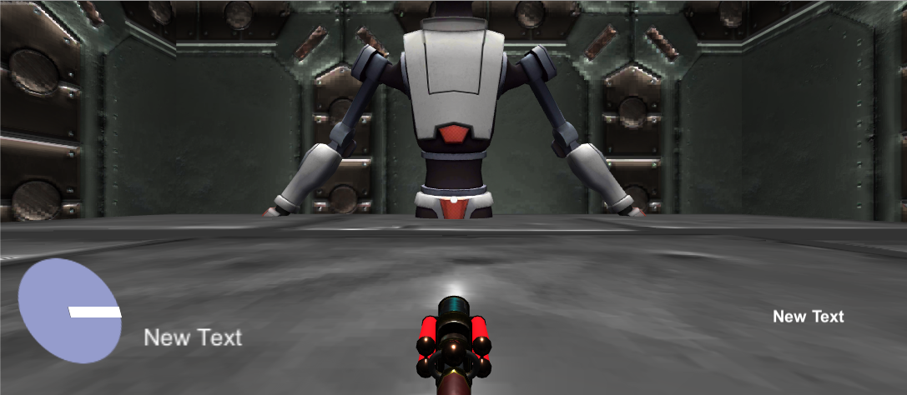
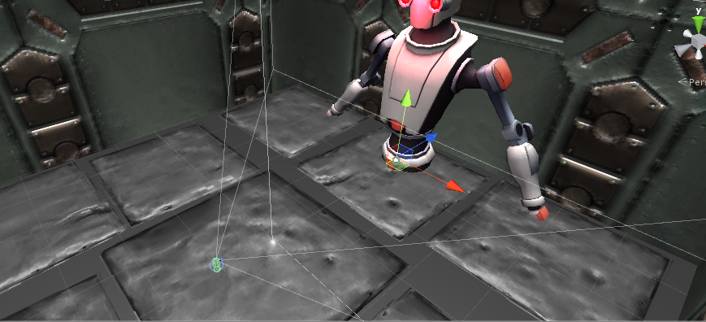

Boss Beat
개인으로 진행한 텀프로젝트
유니티 엔진을 사용하여 VR게임을 제작함
추가 정보 파일 다운로드 :
- 프로젝트 설명
- 조작키 및 구현내용 설명
| 조작키 | 구현내용 |
| 머리를 좌우로 기울임 | 부채꼴 호의 경로를 따라 좌우로 움직임 |
| 카드보드의 터치 | 해당 기능을 통해 총 발사 |
- 담당한 부분
- 프로젝트 결과


- 프로젝트를 진행하면서 느낀 점
- 어려웠던 점
- 기량이 정체된 것을 느낌 ← 강의에서 배운 내용을 최대한 활용하려 했지만, 기대보다 결과가 안좋았음
- 혼자서 감당해야하는 작업량 ← 이번 개인 프로젝트를 진행하며, 혼자서 모든 업무를 담당하는 것이 얼마나 시간이 많이 걸리고 힘든지 알게됨
- 깨달은 점
- 현재 수준에서 만족하는 것이 아니라, 인터넷을 찾아보던가 다른 활동에 참여하면서 게임 개발 기량을 늘려야함
- 혼자서 모든 것을 해보는 것은 좋은 경험이긴 하지만, 기회가 된다면 팀과 함께 프로젝트를 진행하면서 소통능력과 협업능력을 늘려야함
- 새롭게 알게된 점
if (nodeTimer >= 60.0d/stdBPM)
{
nodeTimer -= 60.0d/stdBPM;
}
- 유니티 엔진의 특성상 매번 일정한 시간에 맞춰 시간을 초기화 할때마다 작은 오차가 발생함
- 그 오차시간을 구한 다음 빼줌으로서 오차를 없애줌